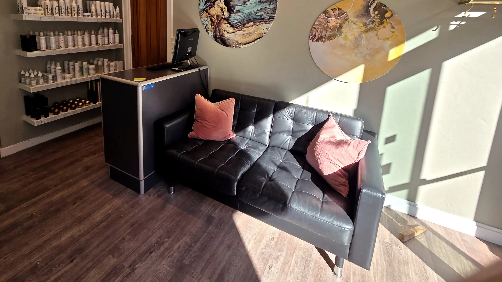
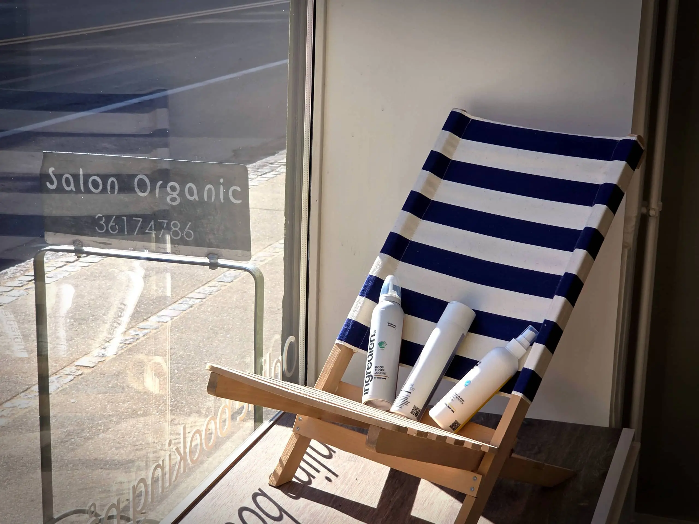

Velkommen til Salon Organic
Salon Organic er en økologisk og grøn frisørsalon i hjertet af Valby.
Det er os med den grønne facade.
Alice åbnede salonen i juni 2007 med visionen om at skabe en forretning,
som er bedre for miljø,
klima, dig og mig.
Vi er altid i godt humør og klar til at give dig en skøn behandling.
Hos Salon Organic går
vi meget op i den gode oplevelse for dig som kunde.
Vi lytter til dig og giver dig gode råd og vejledning i hvad lige netop du har brug
for til dit hår.
Vi klipper også børn, og vi gør meget for, at de får en god oplevelse hos os.
Vi har bl.a. iPads, Søbogaard saft og varm kakao med flødeskum.
Og hvis de "har siddet pænt", så kan de vælge mellem en økologisk slikpose eller slikpind.


Vi er økologisk og grøn
Vi tilbyder økologiske produkter og behandlinger uden skadelig kemi,
og serverer økologiske drikkevarer. Mangler du et godt råd til en ny farve,
frisure eller andet, så kom forbi og vi vil hjælpe dig.
Det er vigtigt for os, at du får lige det, du ønsker.
Derfor er god kommunikation noget, som vi lægger meget vægt på.
Hos Salon Organic passer vi på dig. Hvad enten du gravid eller nybagt mor.
Når du besøger os og får behandlinger, hvad enten om det er hårfarve,
hårkur eller en lækker hårvask, garanterer vi for,
at du får en velværebehandling i et rent miljø uden dårlig kemi.
Hos os kan du derfor slappe helt af og nyde dit besøg mens du blir forkælet.
Du er også meget velkommen til at amme her, og vi varmer også gerne din flaske,
hvis du har brug for det. Barnevogne og klapvogne kan nemt komme ind i salonen og stå,
hvis du ønsker det.